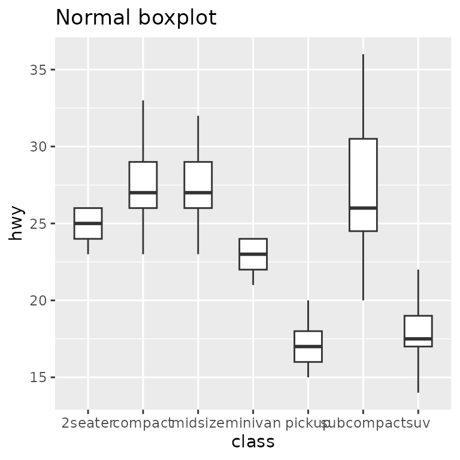
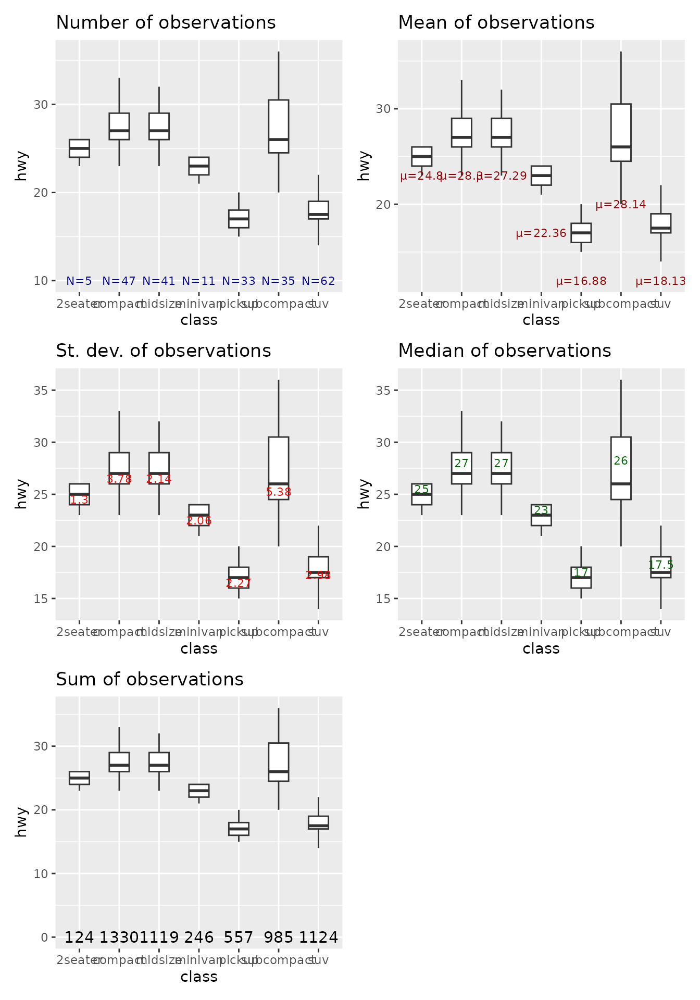

vignettes/04-stat_info_boxplot.Rmd
04-stat_info_boxplot.RmdLast updated: 2022-04-07
# Load ggplot2
library(ggplot2)
# Load ggmitji
library(ggmitji)
# Load patchwork (to put plots together)
library(patchwork)
# Create base boxplot with geom_boxplot, stat_boxplot or stat_summary_boxplot
p <- ggplot(mpg, aes(class, hwy)) + stat_summary_boxplot()
p
p + stat_info_boxplot(statistic = "n", label = "N=", y = 10, text_color = "darkblue", text_size = 3) + labs(title = "Boxplots with number of observations")
p + stat_info_boxplot(statistic = "mean", label = "µ=", y = "min", text_color = "darkred", text_size = 3) + labs(title = "Boxplots with mean of observations")
p + stat_info_boxplot(statistic = "sd", label = "", y = "lower", text_color = "red", text_size = 3) + labs(title = "Boxplots with st. dev. of observations")
p + stat_info_boxplot(statistic = "median", label = "", y = "upper", text_color = "darkgreen", text_size = 3) + labs(title = "Boxplots with median of observations")